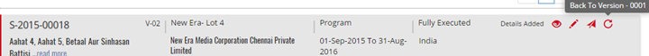
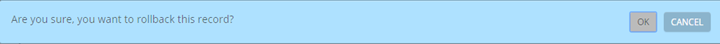
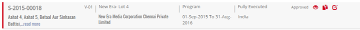


	<section>
		<article>
			<h2>Back to Version<span></span></h2>
			<div>
				<p></p>

				<p>Back to Version is used to restore the deal to a previous version/state. </p>

				<p>It will undo all the changes done after amendment and restore the deal back to its previous version. </p>

				<p>This option will not be available to the user until the deal is approved atleast once.</p>

				<div class="triangle-border top">				
					
				</div>

				<p>User can restore the deal to previous version by clicking Back To Version button on Acquisition Deal List Page.</p>

				<p>After clicking Back To Version , User will be asked for confirmation.</p>

				<div class="triangle-border top">				
					
				</div>

				<p>User will click OK to rollback the deal to previous version or Cancel for No changes.</p>

				<p>It will look something like this after Rollback.</p>

				<div class="triangle-border top">				
					
				</div>
				
			</div>
		</article>
	</section>